PPT Transport
概述
PPT(Proprietary) Transport layer是为PPT应用设计的，提供空中数据包传输服务，具有以下特点：
根据mouse数据动态组合数据包格式。
mouse和dongle之间的可靠传输。
定制数据的双向长数据包传输。
根据空中流量动态切换报告速率。
参考以下内容，了解mouse/dongle应用间消息交互的自上而下概述。 应用消息首先在Transport layer被打包成数据包。然后将数据包发送到Sync layer，该层充当MAC以维持设备之间的数据流和连接， 包括信道选择和地址处理。
如果设备连接，Sync layer会执行射频操作，将比特流传输到对方，然后比特流被接收并自下而上重新组织成应用消息，然后发送到应用层。

消息传输概述
本应用说明将为用户提供基于Transport layer的综合指导，帮助用户启动和进行二次开发。
环境需求
此示例支持以下开发工具包：
硬件平台 |
板卡名称 |
|---|---|
RTL87x2G HDK |
RTL87x2G EVB |
备注
开发人员需要两组开发套件来演示Transport layer。 一个作为主设备角色，另一个作为从设备角色。
这里我们使用三模mouse项目和PPT dongle作为Transport layer的主/从设备进行演示。
编译和下载
主/从设备的示例代码可以在SDK资料夹中找到:
主设备Project file: applications\trimode_mouse\proj\rtl87x2g\mdk
从设备Project file: applications\ppt_dongle\proj\rtl87x2g\mdk
主设备Project file: applications\trimode_mouse\proj\rtl87x2g\gcc
从设备Project file: applications\ppt_dongle\proj\rtl87x2g\gcc
要构建和运行范例，请按照以下步骤进行：
打开示例文件。
选择目标 trimode_mouse_hopping 和 ppt_dongle_hopping。
修改宏 MOUSE_HW_SEL 为 MOUSE_EVB_MODE。
要构建目标，请按照 快速入门 中的 编译 APP Image 章节步骤进行。
成功编译后，命名为
app_MP_xxx.bin的 application image 将生成在 目录application/<trimode_mouse/ppt_dongle>/proj/<mdk/gcc>/bin里。按下 EVB 板上的 reset 按钮，开始运行。
备注
Application image 的具体位置取决于使用 Master/Slave project，以及 compiler 使用 MDK 或者是 GCC 编译。
测试验证
在烧录主从设备的芯片后，并将 作為dongle 的 EVB上CON1接口 和 PC 用 USB 电缆连接，重新启动两个设备后，mouse 光标将自动开始画圈。 用户可以从下面的Log来确认系统是否有正确执行
Mouse端與Dongle端的Log应该显示 [ppt_8k_trans_handle_init] PPT Transport layer ver, 表示 transport layer 模块成功启动
0000151 09-20#15:16:45.061 188 0001688.781 [APP] !**[ppt_8k_trans_handle_init] PPT Transport layer ver v1.2.0, role: 1
Mouse端Log显示 "SYNC_EVENT_CONNECTED" 代表已经成功连接，如下所示。
0000233 07-25#11:12:35.018 251 0009287.531 [APP] !**[ppt_app_sync_event_cb] SYNC_EVENT_PAIRED
0000234 07-25#11:12:35.018 252 0009287.531 [APP] !**[ppt_app_sync_event_cb] SYNC_EVENT_CONNECTED
软件设计介绍
本章从三个不同的方面说明了 Transport layer。
Transport layer 的软件架构。
Transport layer 与应用层或 Sync layer 之间的交互。
Transport layer 的事件处理流程。
为了在无线 mouse 应用中实现每秒 8K 报告速率，采用了以下两种改进。
Sync layer 使用非对称的 7TX/1RX 交互取代传统的 1TX/1RX 模式。即，每第 8 个 CE 时，mouse（主设备）将进行连续 7 个 CEs 的发送操作（TX），并进行 1 次接收操作（RX）以从 dongle 接收信息。参考下图进行说明。
每个数据包包含一个以上的mouse数据，使 dongle 应用在RF进行发送操作（TX）时仍可以报告 HID 数据。
{kind=link}
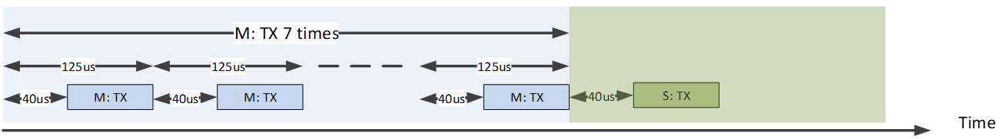
8K上报率下的交互机制
源代码目录
源代码目录:
sdk\applications\ppt_transport\src
Proprietary Transport layer的源文件分布如下：
└── folder: ppt_transport
├── inc includes the header files of the Proprietary Transport layer
└── src includes the source files of the Proprietary Transport layer
├── ppt_trans_handle.c Transport layer interface to application
└── ppt_trans_pkt_algo.c mouse packet algorithm implementation
└── ppt_trans_pkt_ctrl.c mouse packet data control module
└── ppt_trans_sync_ctrl.c 2.4g stack related callback functions
└── ppt_trans_long_pkt_ctrl.c long packet data control module
└── ppt_trans_test_handle.c test module scenario handler
└── ppt_trans_test_stub_sync.c test module for sync lib testing
└── ppt_trans_chann_ctrl.c RF channel control module
└── ppt_trans_pos_ctrl.c mouse position control module
└── ppt_trans_feat_ctrl.c Transport layer feature control module
Flash 布局
应用程序默认的flash布局头文件： sdk\applications\trimode_mouse\proj\flash_map.h。
Example layout with a total flash size of 1MB |
Size(byte) |
Start Address |
|---|---|---|
Reserved |
4K |
0x04000000 |
OEM Header |
4K |
0x04001000 |
Bank0 Boot Patch |
32K |
0x04002000 |
Bank1 Boot Patch |
32K |
0x0400A000 |
OTA Bank0 |
620K |
0x04012000 |
|
4K |
0x04012000 |
|
32K |
0x04013000 |
|
60K |
0x0401B000 |
|
212K |
0x0402A000 |
|
308K |
0x0405F000 |
|
4K |
0x040AC000 |
|
0K |
0x040AD000 |
|
0K |
0x040AD000 |
|
0K |
0x040AD000 |
|
0K |
0x040AD000 |
|
0K |
0x040AD000 |
|
0K |
0x040AD000 |
OTA Bank1 |
0K |
0x040AD000 |
Bank0 Secure APP code |
0K |
0x040AD000 |
Bank0 Secure APP Data |
0K |
0x040AD000 |
Bank1 Secure APP code |
0K |
0x040AD000 |
Bank1 Secure APP Data |
0K |
0x040AD000 |
OTA Temp |
312K |
0x040AD000 |
FTL |
16K |
0x040FB000 |
APP Defined Section1 |
4K |
0x040FF000 |
APP Defined Section2 |
0K |
0x04100000 |
重要
如需调整Flash布局，请参考 快速入门 中 生成 Flash Map 的步骤。
调整Flash布局后，必须依照 生成 OTA Header 和 生成 System Config File 上的步骤，基于新的Flash布局产生档案。
调整Flash布局后，必须使用新的
flash_map.h替换sdk\applications\trimode_mouse\proj\flash_map.h重新进行 编译 APP Image 步骤。
Transport Layer模块架构
本节将从两个不同角度讨论Transport layer的模块架构，以便开发人员更深入了解。
- 功能该模块可分为子模块，每个子模块具有不同的子程序，以帮助完成来自应用层的数据包传输请求。
- 输入/输出事件通过定义Transport layer的输入和输出事件及其发布方式，开发人员可以追踪服务处理过程及各个子模块之间的数据流。
Transport Layer子模块
下图说明了 Transport layer模块架构，里面主要有五个子模块。
{kind=link}
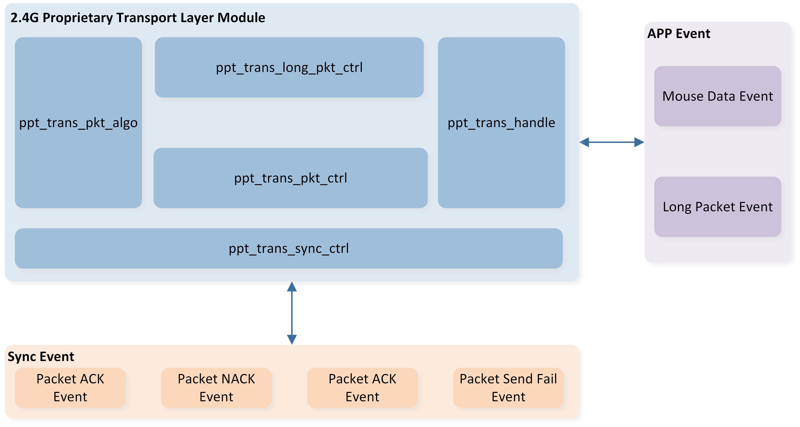
Transport layer模块架构
子模块 |
说明 |
|---|---|
PPT_TRANS_HANDLE |
作为应用层的统一接口，并在收到来自应用层的输入事件时触发相应的子程序 |
PPT_TRANS_SYNC_CTRL |
负责封包传输的子程序，以及处理Sync layer事件或向Sync layer发出请求的统一接口 |
PPT_TRANS_PKT_CTRL |
负责封包补偿和mouse数据管理的子程序 |
PPT_TRANS_LONG_PKT_CTRL |
负责长封包重传和长封包数据管理的子程序 |
PPT_TRANS_PKT_ALGO |
负责封包组合和解析的子程序 |
Transport Layer事件
我们从两方面定义事件，以便开发者能够清楚地了解每个事件如何触发以及应实现什么。
Type
应用APP事件：事件来自应用层，或应该发布到应用层。
Sync layer堆事件：事件来自Sync layer，或应该发布到Sync layer。
Data Flow
输入事件：输入数据或信号到Transport layer。
输出事件：从Transport layer输出数据或信号。
下图为每个输入事件及其对应的Transport layer处理说明。

Transport layer事件概述
下表列出了输入/输出事件，包括类型和数据流。
事件 |
类型 |
数据流 |
描述 |
|---|---|---|---|
应用请求数据发送 |
应用 |
输入 |
应用请求发送HID相关数据，包括光学数据、按钮按下或释放、滚轮滚动 |
应用通知数据已接收 |
应用 |
输出 |
鼠标数据解析完成后，此事件连同解析结果一起提交给应用层进一步处理 |
应用请求发送长包数据 |
应用 |
输入 |
应用请求发送定制数据，包括OTA图像、LED配置等 |
应用通知长包数据已接收 |
应用 |
输出 |
长包接收完成后，此事件连同长包数据一起提交给应用层进一步处理 |
应用通知长包数据发送完成 |
应用 |
输出 |
长包传输已被确认后，此事件提出给应用层，表示长包处理已完成 |
堆请求数据包发送 |
同步层 |
输出 |
鼠标数据或长包数据组成包后，传输层生成此事件给同步层作为数据包发送 |
堆通知数据包已确认 |
同步层 |
输入 |
先前发送的数据包已从对等端确认 |
堆通知数据包未确认 |
同步层 |
输入 |
先前发送的数据包未被确认，触发传输层的补偿机制以确保正确的光标偏移 |
堆通知数据包发送失败 |
同步层 |
输入 |
数据包未通过空中传输。在这种情况下，此数据包被视为已丢失，触发传输层的补偿机制，以避免进一步的延迟增加 |
堆通知数据包已接收 |
同步层 |
输入 |
设备从同步层收到数据包，传输层会解析数据包为鼠标数据或长包数据，然后发出事件将数据转发至应用层 |
Transport Layer模块交互
本节将简要介绍对等设备之间的空中数据包接口。
Transport Layer数据包格式架构
在mouse应用中，吞吐量使用率对于较高的报告率变得至关重要。所使用的外围设备通常具有硬件去抖时间以避免抖动。 这意味着通常需要几毫秒产生有意义的信号，然而数据包传输每几百微秒完成一次，造成额外的电流消耗和系统效率的降低，因为如果数据包格式是固定的，每次数据包传输中都包含大量的重复数据。
Transport layer支持动态数据包格式来避免浪费。此外，我们引入了数据包交互中的传统mouse数据概念，通过利用动态数据包长度节省的有效负载，使其在这种时间受限的场景中更具有韧性。 Transport layer数据包格式 说明了动态数据包的组成。数据包中仅有前两个字段，标头和序列号是必需的。 配置序列号后，Transport layer将决定是否插入相应字段到数据包中，如按钮/滚轮/移动/长数据包数据。下面，我们将简要解释每个字段。

Transport layer数据包格式
8K报告速率下，最大的数据包长度配置为7字节数据，crc设置为3字节，这是考虑到目前Realtek RTL8762G系列仅支持2M PHY比特率的平衡点。
Header
Header由不同标志组成，这些标志用来通过开启或关闭来与从属设备通信是否有对应的数据字段需要解析。
Packet Type
在封包类型栏位中指定了两种封包类型，分别是「偏移」和「补偿」。mouse将累积光学传感器采样的光标移动，并定期通过补偿类型封包与dongle同步该总和，以对齐光标的轨迹，防止在不良空气环境下漂移。另一方面，偏移类型则意味着通常的mouse封包，其在此封包中携带常规的传感器数据。
Sequence Number
Sequence Number由主设备控制，分别对主设备与从设备有不同功用。
- 主设备
当收到Sync layer的ACK或NACK事件时，主设备会解析序列号以决定是否需要重新传输该数据包。 每次数据包发送请求事件，序列号将增加一。
- 从设备
每个数据包携带两组备份的动作数据，作为前次发送数据包的备份。 如果从设备发现两个连续数据包之间的序列号不连续，便知道这两个数据包之间有数据包掉落，并应使用备份数据来恢复游标漂移。
备注
如果在数据包发送请求事件后发生数据包发送失败事件，序号将返回到数据包发送请求事件之前的原始值。
Motion Data
移动数据字段定义了由光学传感器生成的采样偏移数据。 每当一对移动偏移数据准备好传输时，Transport layer会找到一个最接近它的传统移动数据作为包数据。如果没有足够的传统数据，则使用零移动数据来组成包。 下图说明了一个例子，其中每125微秒生成一次新的移动数据并被采用到包中。
{kind=link}
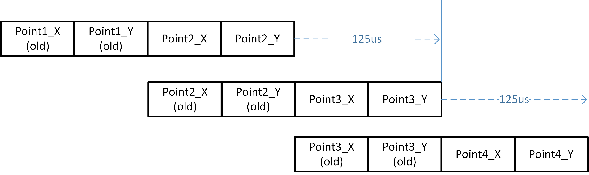
传统移动数据
Long Packet Data
长封包的设计目的是允许定制数据传输，如DPI配置或光效同步，除了普通的mouse数据之外。 用户数据将自动分割成几塊并载入每个封包中，这些段在对等设备中重新组织。 重新组织数据时将应用CRC16校验算法进行验证。
Transport Layer封包长封包结构
当封包重新组织完成后，Transport layer会将预先注册的长封包数据附加到封包到其最大值。 每个长封包必须带有一个两位的操作码和六位的长封包序号作为元数据。这意味着在附加长封包数据之前，封包长度不得超过七字节。 Transport layer构建一个表格来存儲长封包序号和该封包中携带的数据偏移量之间的映射信息，以便在接收到否认事件时进行长封包重传。当新数据段附加到封包后，长封包序号加一。
Transport Layer频道控制结构
为了提高2.4G数据包传输的质量并减少来自接入点（AP）或其他发射器的干扰，我们提供了两种频道控制选项：
频道扫描机制：这种方法利用每秒触发一次的频道监控器来评估2.4G数据包传输的性能。基于其评估结果，系统可以决定是否启动频道扫描以优化传输。
频道遍历机制：这种方法在检测到当前频道上的传输發生中断时自动切换传输频道，以确保无缝通信。
通过这些机制，我们能够增强传输的可靠性并有效管理频道干扰。
需要注意的是，频道遍历机制不能与频道扫描机制共存。因此，如果用户同时启用两个宏，将会发生编译错误。
#if PPT_TRANS_FEATURE_SUPPORT_CHANNEL_CTRL && PPT_TRANS_FEATURE_SUPPORT_CHANNEL_TRAVERSE
#error "Cannot enable both feature simutaniously"
#endif
频道扫描机制
首先，我们介绍频道扫描机制。用户可以通过配置以下宏来选择信道扫描方法。
#define PPT_TRANS_FEATURE_SUPPORT_CHANNEL_CTRL 0 /** Enable channel statistic control method */
需要提到的是，频道扫描机制的需依赖于使用长封包传输机制来进行主从端的统计数据。整体频道扫描机制流程如下：
频道监控器每秒会触发一次。
监控器会评估2.4G数据包传输的品质，考虑因素包括数据包丢失、延迟和干扰。
根据评估结果，监控器会决定是否需要进行频道扫描。
如果当前传输品质达不到设定的要求，监控器会启动频道扫描。
在频道扫描期间，监控器会扫描可用的2.4G频道，并去统计每个频道的数据包传输情况，并以此选择干扰最少的频道。
一旦统计数据中出现理想的频道，主从设备将切换连接到该频道。
主从设备会每秒重复此过程以连续监视和优化2.4G数据包传输。

频道扫描流程图
参考下图来了解2.4G主从设备中的Transport layer事件及其相应处理。

频道控制模块概述
以下是对应上图中的每个输入事件的详细说明。
应用程序APP事件
应用程序长数据包发送完成事件。
当长数据包发送完成时，将通知应用程序。
当频道控制相关命令发送完成时，频道控制模块将接收到相应的事件，以下是处理 API。
ppt_trans_chann_ctrl_sweep_channel_cb()
ppt_tans_chann_ctrl_change_channel_cb()应用程序长数据包接收完成事件。
当长数据包接收完成时，将通知应用程序。
频道控制模块将接收到频道控制相关命令，以下是处理 API。
ppt_tans_chann_ctrl_long_pkt_rcv_cb()
Sync layer堆栈事件
堆栈通知频道统计完成事件。
接收到频道统计结果，频道控制模块可根据接收到的结果进行进一步操作。以下是处理 API。
ppt_trans_chann_ctrl_get_result()堆栈通知数据包传输事件。
之前发送的数据包被对端确认。以下是处理 API。
ppt_trans_chann_ctrl_ack_cnt_inc()堆栈通知数据包未确认事件。
之前发送的数据包未被对端确认。以下是处理 API。
ppt_trans_chann_ctrl_nack_cnt_inc()堆栈通知数据包发送失败事件。
之前发送的数据包发送失败。以下是处理 API。
ppt_trans_chann_ctrl_send_fail_cnt_inc()
频道控制模块可调节参数
为了调整频道扫描性能，我们提供了几个参数，使用者可以根据自己的具体要求调整这些参数来优化频道扫描机制。
/*This parameter determines the interval at which the channel monitor is triggered.
It defines the duration, measured in milliseconds, between each activation of the channel monitor.*/
#define PPT_TRANS_CHANN_MONITOR_ITVL 1000
/*This parameter defines the minimum duration for channel usage in the channel control module.
It determines the amount of time the channel should be utilized after executing channel hopping.
The unit of measurement for this parameter is milliseconds.*/
#define PPT_TRANS_MIN_CHANN_USAGE_TIME (2 * 1000)
/*This define the trigger threshold for the channel monitor. The parameter determines
the minimum acceptable ACK receive rate for the 2.4G packet transmission. This threshold
is defined as a percentage value. For example, if the trigger threshold is set to 98%, it
means that the 2.4G packet transmission system expects to receive at least 98% of the
ACKs from the 2.4G slave device. To put it in perspective, if 7000 packets are sent, the
system would expect to receive a minimum of 6860 ACKs.
By setting a higher trigger threshold, the system becomes more sensitive to the
environment and demands a higher success rate in terms of ACK reception. This can help
ensure a more reliable and efficient 2.4G packet transmission by minimizing the chances
of packet loss or interference. */
#define CHANN_MONITOR_CHANN_SWEEP_THRESH 95
/*This define the channel disqualify trigger counts threshold for the channel monitor. The
parameter determines the number of consecutive failures to meet the ACK receive rate
trigger threshold before a channel is viewed as disqualified. This threshold is specified by
a count value.
For example, if the disqualify trigger counts threshold is set to 3, it means that if a
channel fails to meet the ACK receive rate trigger threshold for 3 consecutive times, the
channel monitor will consider the channel disqualified and will execute channel sweeping to
select a new channel.
By setting a lower disqualify trigger counts threshold, the system will become more
sensitive to the environment and reacts quickly to unfavorable channel conditions.*/
#define SWEEP_TRIGGER_THRESH_COUNT 3
/*The parameter determines the duration for which the monitor scans and evaluates each
available channel during the sweeping operation. Users can adjust this duration based on
the size of the network and the time required for accurate channel analysis. The
parameter is defined in milliseconds.
For example, if the parameter is set to 200 milliseconds, it means that the channel
monitor will sample and evaluate each channel candidate for a period of 200 milliseconds.
During this time, the monitor collects statistical data and performance metrics for analysis
and decision-making.
By setting a larger value for the total accumulated time, the channel sweeping process will
take more time as each channel is evaluated for a longer duration. This can result in a
higher level of accuracy and reliability in determining the performance of each channel.*/
#define PER_CHANNEL_SWEEPING_TIME 200
/*The definition of this parameter is same as previous. The difference is that this
parameter is only used when the master and slave are performing reconnection*/
#define PER_RECONN_CHANNEL_SWEEPING_TIME 100
/*The definition of this parameter is same as previous. The difference is that this
parameter is only used when the master and slave first connected.*/
#define PER_CONN_CHANNEL_SWEEPING_TIME 500
连接时的频道扫描
在2.4GHz主设备和从设备连接的情况下，可以根据自上次断开连接以来的时间差异进行额外的频道扫描。如果时间差低于特定阈值，则表明自上次连接以来环境变化不大。
在这种情况下，模块可以确定先前从频道扫描中获得的频道候选依然有效并且可以重复使用。在环境条件被认为稳定的情况下，重复使用先前的频道扫描结果，使模块优化频道选择过程。
这种方法通过避免在环境预期保持相对稳定时进行不必要的频道扫描来节省时间和资源。使用先前的频道扫描候选假设通信的最佳频道并未显著改变，导致2.4GHz主设备和从设备之间更高效、无缝的重新连接。
总的来说，这种策略通过在被视为稳定的环境中重复使用先前的频道扫描结果来提高频道选择过程的效率，并使主设备与从设备之间更快、更可靠地重新连接。
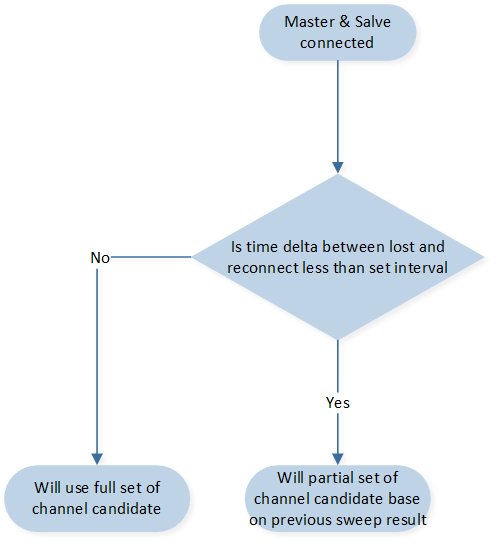
连接时的频道扫描流程图
针对这种情况，有几个参数，其详细内容如下。
/*This define the lenth of the paratial set of the channel candidate. For example, by
setting the parameter to 4, the channel sweeping module will maintain a partial set
consisting of the best 4 channels. These channels will be considered as the channel
candidates when the 2.4GHz connection is lost and needs to be reestablished. The length
value shall smaller than the length of the full set channel candidates.
*/
#define LOST_RECONN_SWEEP_CHANN_LEN 4
/*This define the time threshold for channel monitor whether to use the partial set of the
channal candidates of not, the unit is define in milliseconds. For example, by setting the
parameters to 1500. When connected if the time delta since last disconnect is below 1500
ms, it may indicate that the environment has not changed significantly since the previous
connection, and the previous channel sweep result can be reused.*/
#define CONSIDER_LOST_DURATION 1500
极端环境保护
在当前环境混乱且缺乏适合2.4GHz传输的频道的某些情况下，频道扫描过程本身可能会给2.4GHz通信带来额外干扰。
为了解决这个问题，频道监控器整合了一个机制，当频道扫描触发阈值迅速连续触发时，能够动态调整频道扫描触发阈值。
当频道扫描在短时间内频繁触发时，这表明可用频道因严重干扰或其他问题而不稳定或不适合传输。在此情况下，继续进行频道扫描可能会加剧干扰并导致性能下降。
为了减轻这一情况，当检测到快速触发时，频道监视器会降低频道扫描触发阈值。通过降低阈值，模块可以减少频道扫描的频率以及由此过程引起的干扰。
这种自适应方法使频道监视器能够对环境动态作出响应，并防止频道扫描过程本身带来的额外干扰。通过调整触发阈值，模块可以在评估可用频道和最小化干扰之间取得平衡，从而最终提高2.4GHz传输的整体性能和稳定性。流程图如下所示。
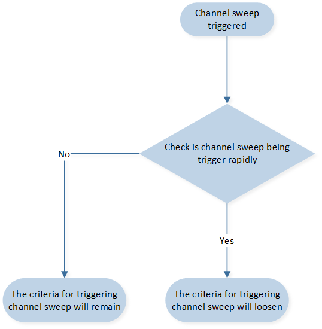
极端环境的频道扫描流程图
针对这种情况，有几个参数，详细信息如下所示。
/* These two parameters, BAD_ENVIRONMENT_MONITOR_TIME and
CONSIDER_BAD_ENVIRONMENT, work together to define the condition for rapid triggering.
BAD_ENVIRONMENT_MONITOR_TIME is defined in seconds and represents the time interval
within which the channel sweep triggers are monitored. It determines the duration over
which the channel sweep trigger count is evaluated.
CONSIDER_BAD_ENVIRONMENT is defined in count and represents the threshold for the
number of channel sweep triggers within the specified time interval. If the channel sweep
is triggered equal to or more than the specified count within the defined time interval, the
condition of rapid triggering is considered to be met.
For example, if the parameters are set to 20 seconds and 3 times, it means that the
channel sweep triggers are monitored within a 20-second interval. If the channel sweep is
triggered 3 times or more within this 20-second interval, it is considered to be a rapid
triggering condition and the module will lower the channel sweeping trigger threshold for
chaotic environment protection.
*/
#define BAD_ENVIRONMENT_MONITOR_TIME 20 //seconds
#define CONSIDER_BAD_ENVIRONMENT 3
/*The parameter determines the duration for which the channel monitor will lower the
channel sweeping trigger threshold when rapid triggering is detected. It is defined in
milliseconds.
For example, if you set the parameter to 60000 milliseconds (60 seconds), it means that
when the channel sweep is triggered rapidly and the condition for rapid triggering is met,
the channel monitor will lower the channel sweeping trigger threshold for a duration of 60
seconds.
*/
#define BAD_ENVIRONMENT_PROTECT_TIME 60000
/*The definition of this parameter is same as SWEEP_TRIGGER_THRESH_COUNT and is the
trigger criteria for chaotic environment.
*/
#define BAD_EVN_SWEEP_TRIGGER_THRESH 5
/*The definition of this parameter is same as CHANN_MONITOR_CHANN_SWEEP_THRESH
and is the trigger criteria for chaotic environment.
*/
#define BAD_EVN_CHANN_SWEEP_THRESH 90
频道扫描提前终止
此外，还有频道扫描的提前终止条件。考虑以下情况：当2.4G频道没有任何干扰时，预期所有频道都会提供良好的传输条件。因此，从扫描传输统计结果中选择最佳频道变得具有挑战性。为了解决这个挑战，设置了一个最大的扫描次数作为频道扫描过程的提前终止条件。
最大扫描次数参数决定了在终止频道扫描过程之前将执行的频道扫描的最大次数。如果在执行最大扫描次数之后，系统仍无法选择最佳频道，则2.4G主设备将终止频道扫描并选择当前的最佳频道作为传输频道。
针对这种情况，有一个参数，详细信息如下所示。
/* 此参数确定在终止频道扫描过程之前，将执行的最大频道扫描次数
*/
#define MAX_SWEEP_COUNT 7
频道扫描安全机制
为了确保频道扫描命令成功传输到对等设备，设置了一个保护机制。如果2.4G从设备在预定时间内未能接收到频道扫描命令或2.4G主设备未能发送频道扫描命令，对应的设备将启动断开命令，然后尝试重新连接到2.4G主设备。
此保护机制旨在防止频道通信中断或从设备错过重要命令。通过触发断开和随后的重新连接，从设备可以重新获得与主设备建立可靠连接的机会，并接收到所需的命令，包括频道扫描命令。
此机制有助于维持频道扫描过程的完整性，并确保通信系统中的所有设备都能同步并有效地执行其任务。
针对此种情况，设置了一个参数，详细如下。
/* This parameter is set for 2.4G slave device, This parameter determines the
acceptable time difference between consecutive channel sweeping commands, and it is
measured in milliseconds.
For example, if there are 15 channels and each channel takes 200 milliseconds to sample
and evaluate, with a parameter set to 90 milliseconds for the expected tolerance of the
time delta, the 2.4G slave device would expect to receive the next channel sweeping
command within 3090 milliseconds (15 channels * 200 ms + 90 ms = 3090 ms).
If the 2.4G slave device does not receive the next channel sweeping command within this
expected timeframe, it will initiate a disconnect command and then attempt to reconnect
to the 2.4G master device. This protection mechanism ensures that the slave device can
maintain synchronization with the master device and receive the necessary commands for
the channel sweeping process.
*/
#define CONN_PROTECT_OFFSET 90
紧急频道机制
此外，当进行频道扫描时，将选择最佳频道作为主频道，另一个频道作为紧急频道。紧急频道的意思是，当主频道受到严重干扰导致2.4G主设备或从设备无法接收到来自对等设备的任何数据包时，设备将尝试从主频道切换到紧急频道。
在频道扫描过程中，我们将选择最佳频道作为主频道，并指定另一个频道作为紧急频道。紧急频道的目的是作为备份选项，以防主频道遭遇严重干扰。在2.4G主设备或从设备无法接收到来自对等设备的任何数据包时，由于主频道受到严重干扰，设备将尝试从主频道切换到紧急频道。
通过配置紧急频道，设备即使在主要频道无法使用的情况下也能保持通信和连接。这允许连续运作并减少干扰对整个系统性能的影响。
目前选择紧急频道的标准是基于与主要频道的频率差异。具体而言，如果第二最佳频道与主要频道的频率差异大于设定的阈值，将选择该频道。
此场景的参数定义如下。
/* This parameter determines the minimn channel bandwidth delta with the emergency
channel and the main channel. For example if the main channel is 2442 (MHz) than the
emergency channel should greater than 2467 (Mhz) or lesser than 2417 (MHz)
*/
#define EMERGENCY_CAHNNEL_MIN_DELTA 25
此方法考虑到干扰和干扰不仅会影响主要频道，还会影响其附近的其他频道。通过选择与主要频道有较大频宽差异的频道，紧急频道更有可能受到较少的干扰并提供更可靠的通信环境。
考虑附近频道的影响有助于考量干扰的潜在扩散，确保紧急频道足够隔离主要频道所受的干扰。
然而，在没有符合紧急频道选择标准的频道的情况下，替代方法是选择第二最佳频道作为紧急频道。这意味着如果没有频道的频宽差异大于设定的阈值，仍然会选择第二最佳频道作为紧急频道。
流程图如下所示：
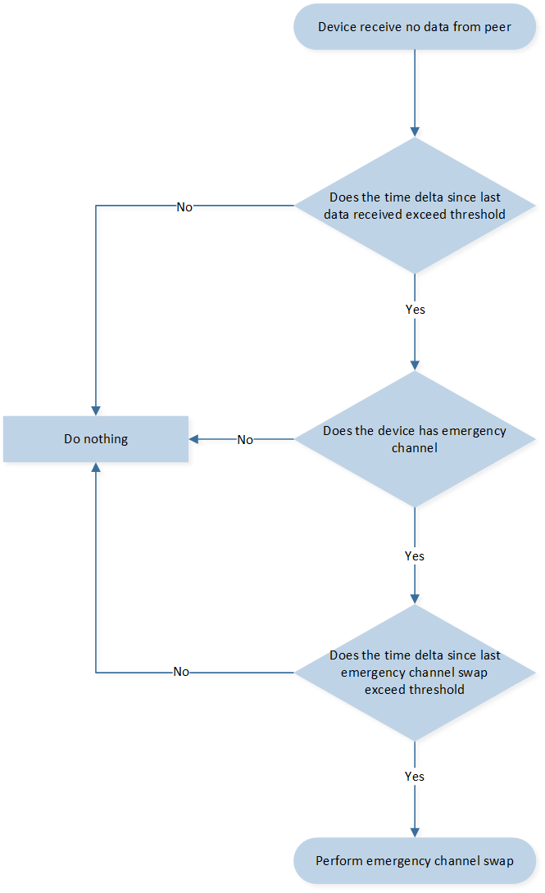
紧急频道选择流程图
频道控制模块API
最后，频道控制模块提供了管理和控制通信频道的功能。它允许用户执行与频道控制相关的各种操作，如下。
/**
* @brief channel control module init, shall only called by 2.4G master.
* @return none
*/
void ppt_trans_chann_ctrl_master_init(void);
/**
* @brief channel control module init, shall only called by 2.4G slave
* @return none
*/
void ppt_trans_chann_ctrl_slave_init(void);
/**
* @brief command 2.4G master to perfoem channel sweep.
* @param len - length of the channel index array
* @param chan_idx - pointer of the channel index array
* @param sweep_time - period of time for each channel
* @return command success or fail
* @retval true command success
* @retval false command fail
*/
bool ppt_trans_chann_ctrl_command_sweep_channel(uint8_t len, uint8_t *chan_idx,
uint16_t sweep_time);
/**
* @brief this api will process the statistic result of each channel when channel sweeping
* complete.
* @param param - the statistic result for each channel candidate
* @return none
*/
void ppt_trans_chann_ctrl_get_result(sync_chann_param_t param);
/**
* @brief handle channel control module when 2.4G master and slave disconnected.
* @return none
*/
void ppt_trans_chann_ctrl_handle_disconnect(void);
/**
* @brief handle channel control module when 2.4G master and slave connected.
* @return none
*/
void ppt_trans_chann_ctrl_handle_connect(void);
/**
* @brief To get whether 2.4G device is performing channel sweeping.
* @return channel sweeping status
* @retval true no channel sweeping ongoing
* @retval false channel sweeping ongoing
*/
bool ppt_trans_chann_ctrl_is_idle(void);
/**
* @brief ACK count statistic for channel monitor.
* @return none
*/
void ppt_trans_chann_ctrl_ack_cnt_inc(void);
/**
* @brief NACK count statistic for channel monitor.
* @return none
*/
void ppt_trans_chann_ctrl_nack_cnt_inc(void);
/**
* @brief Send fail count statistic for channel monitor.
* @return none
*/
void ppt_trans_chann_ctrl_send_fail_cnt_inc(void);
/**
* @brief Declared for long packet module, will be referenced
* when channel control long packet reception completes.
* @param result - long packet receive status.
* @param pkt_data - pointer of received long packet data.
* @param len - length of received long packet data
* @param info - 2.4G related info.
* @return none
*/
void ppt_tans_chann_ctrl_long_pkt_rcv_cb(bool result, uint8_t *pkt_data, uint16_t len,
sync_receive_info_t info);
/**
* @brief handle channel control module when 2.4G slave disconnect with master,
* shall only be called by 2.4G slave.
* @return none
*/
void ppt_trans_chann_ctrl_slave_handle_disconnect(void);
频道遍历机制
在本节中，我们介绍频道遍历机制。用户可以通过配置以下宏来选择频道遍历机制：
代码在sync lib库中实现。频道遍历机制将在当前频道受到干扰时自动切换传输频道，以确保通信的流畅。频道遍历机制的流程如下：
初始连接：当2.4GHz主设备与从设备连接时，系统将在一个频道上开始传输。
检测干扰：当传输受到干扰（即主设备或从设备都未收到来自对端的封包）时，将启动频道遍历。
基于时间计数器切换频道：设备将根据当下的连接时间计数器切换传输频道。
重试通信：如果系统仍无法在选定的频道上重新建立通信，设备将再次切换到另一个传输频道（步骤3）。
成功重新建立通信：如果系统在选定的频道上重新建立通信（即收到来自对端的封包），设备将停留在选定的频道上。
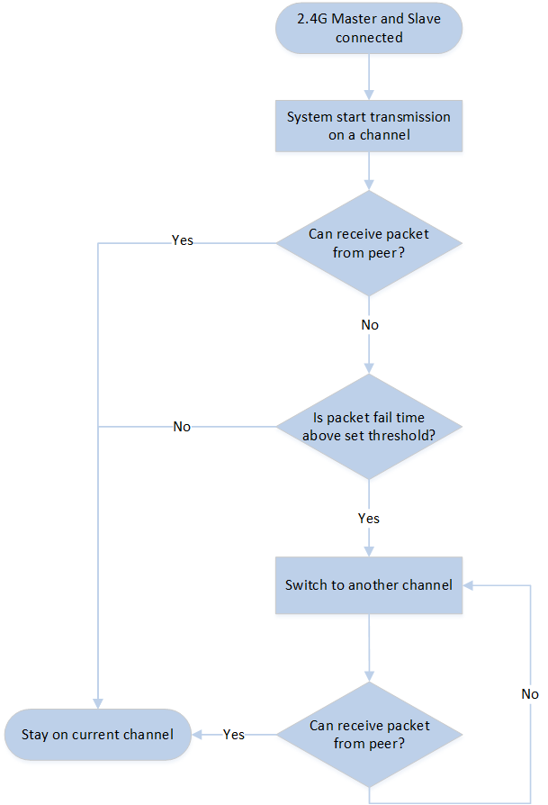
频道遍历流程图
Transport Layer位置控制方案
位置控制模块概述
在目前的2.4G数据包传输机制中，数据包以x轴和y轴位移量的形式传递关键信息。这些位移量在定位鼠标游标的位置上，有着至关重要的作用。然而，外部干扰可能会损坏2.4G传输的可靠性。这些干扰可能会中断数据包的平稳传输，从而导致数据包丢失。
这种数据包丢失的后果可能是有问题的。当数据包丢失时，会导致位移量的顺序混乱。因此，对于应对的2.4G主设备和从设备可能会对游标位置产生不同的认知。而位置认知不一致会进而导致在终端电脑上游标的位置出现错误。
为了说明位移错误的影响，能参考以下例子，考虑位移量（3,4）、（5,-2）和（1,3）。如果这些位移量按正确顺序接收，则得到的指针位置将是（3,4）->（8,2）->（9,5）。然而，如果发生错位，位移量收到的顺序为（3,4）、（1,3）、（5,-2），则指针位置将计算为（3,4）->（4,7）->（9,5）。这里可以明显看出，由于错位，第二个点的位置是不准确的。
为了确保精确的游标的定位，我们使用了一个位置同步控制机制。考虑到位移量顺序混乱可能导致的潜在不准确性，2.4G从设备被设计为忽略顺序不准确的数据包。这样可以防止由于顺序错误的数据包而出现的位置错误。
此外，为了维护2.4G主设备和从设备之间的同步，我们定期更新位移量的总和。这意味着在规定时间间隔内，主设备会向从设备传输出当前的位移量总和。当从设备接收到这一总和后，会相应地更新自己的位置。这个同步过程确保了两个设备对mouse位置有一致且最新的信息。
通过引入这个位置同步控制机制，我们最大限度地提高了游标位置的精确度，减少了由于位移量错位引发的任何偏差。主设备和从设备之间稳定且定期的位移总数据信同步，允许平稳可靠地同步游标的位置，从而改善终端指针的位置精度。
此流程图如下所示。
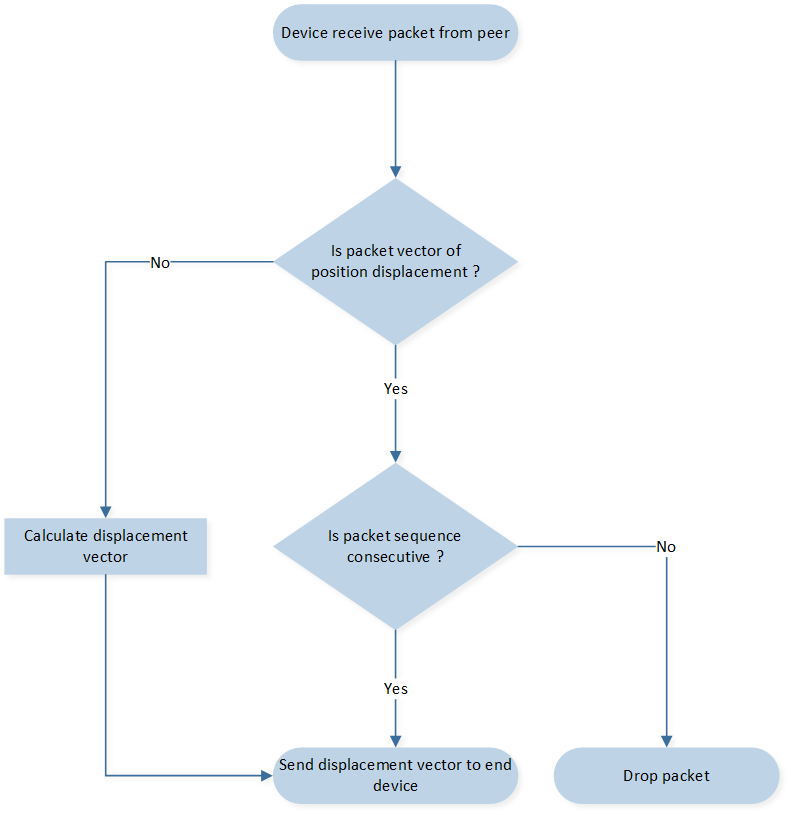
位置控制数据包处理流程图
请参阅下图了解2.4G主从设备中Transport layer事件及相应处理的概述。

位置控制模块概述
以下是上图所提到的各输入事件的详细解释。
应用层APP事件
应用请求数据发送事件。
应用请求发送HID相关数据，包括光学数据、位移向量数据、按钮按下或释放以及滚轮滚动。
位置控制模块将根据接收到的位移向量数据更新并记录光标位置。
在传输数据包之前，位置控制模块会先判断该数据包是否有效，如果无效，则放弃该数据包。
应用接收数据包事件。
应用接收来自对等方的HID相关数据，包括位移向量数据、按键按下或释放以及滚轮滚动。
位置控制模块将解构数据包并根据接收到的位移向量数据计算新位置，然后将位置数据转发到USB层。
Sync layer棧事件
棧通知数据包被Ack事件。
之前发送的数据包已被对方确认。
位置控制模块 API
此控制方案的参数定义如下。
/* This parameter determines the synchronized interval of position
displacement vector sums between 2.4G master and slave. For instance, if
this parameter is set to 5, it signifies that the 2.4G master will attempt to
transmit its vector sum every 5 packets. This synchronization interval allows
the master and slave devices to exchange information and ensure that their
displacement vectors are kept in harmony. By periodically transmitting the
vector sum, the master device keeps the slave device updated with the
latest displacement information. This allows for accurate tracking and
positioning of the cursor on the receiving end.
*/
#define PPT_TRANS_POS_CTRL_SYNC_INTERVAL 5
此外，为此模块定义了一个新的数据结构。
typedef union
{
struct
{
int32_t pos_x;
int32_t pos_y;
};
uint8_t d8[8];
} T_PPT_TRANS_POS_VECTOR_SUM;
最后，以下是位置控制模块提供的API。
/**
* @brief get the previous record position which store in the hist_pos array.
* @param idx - the recording index of the hist_pos array
* @return the position record of the previous moment.
*/
T_PPT_TRANS_POS_VECTOR_SUM ppt_trans_pos_ctrl_get_hist_pos(uint8_t idx);
/**
* @brief update the record position directly.
* @param new_pos - the new position.
*/
void ppt_trans_pos_ctrl_update_pos(T_PPT_TRANS_POS_VECTOR_SUM new_pos);
/**
* @brief update record packet receiving anchor directly.
* @param seq - the sequence number of the received packet
* @param ce - the time anchor when receiving packet
*/
void ppt_trans_pos_ctrl_update_recv_ankor(uint8_t seq, uint16_t ce);
/**
* @brief update the record positon based on the received displacement vector.
* @param x - the position displacement on x-axis
* @param y - the position displacement on y-axis
* @return the updated position.
*/
T_PPT_TRANS_POS_VECTOR_SUM ppt_trans_pos_ctrl_recv_position_vector(int16_t x, int16_t y);
/**
* @brief judge whether the received packet is consecutively to prevent misalignment.
* @param seq - the sequence number of the received packet
* @param ce_cnt - the time anchor when receiving packet
* @param range - the tolerance for sequence skip
* @return the validation result of the packet, 0 is invalid otherwise valid packet
*/
uint8_t ppt_trans_pos_ctrl_judge_pkt_valid(uint8_t seq, uint32_t ce_cnt, uint8_t range);
/**
* @brief position control module init, reset the parameter.
* @return none
* @retval void
*/
void ppt_trans_pos_ctrl_init(void);
/**
* @brief store - the currently position to the hist_pos array for future usage.
* @param idx - the recording index of the hist_pos array
*/
void ppt_trans_pos_ctrl_record_pos(uint8_t idx);
/**
* @brief reset record position history data which store in the hist_pos array.
* @return none
*/
void ppt_trans_pos_ctrl_clear_hist(void);
/**
* @brief get the sequence number of previous valid received packet
* @return sequence number of packet
*/
uint8_t ppt_trans_pos_ctrl_get_prev_seq(void);
/**
* @brief reset the current position.
* @return none
*/
void ppt_trans_pos_ctrl_clear_pos(void);
/**
* @brief handle positon control module when 2.4G master and slave disconnected.
* @return none
*/
void ppt_trans_pos_ctrl_handle_disconnect(void);
/**
* @brief handle positon control module when 2.4G master and slave connected.
* @return none
*/
void ppt_trans_pos_ctrl_handle_connect(void);
/**
* @brief ppt_trans_pos_ctrl_handle_recv_msg
* @param p_data - pointer to receive data.
* @param len - data length.
* @param rssi - ble rssi of data
* @return none
*/
void ppt_trans_pos_ctrl_handle_recv_msg(uint8_t *p_data, uint16_t len,
sync_receive_info_t *info);
/**
* @brief register app callback for receiving data for position control module
* @param cb - callback function when packet received
* @return none
*/
void ppt_trans_pos_ctrl_reg_receive_pos_cb(ppt_trans_handle_receive_pos_pkt_cb cb);
/**
* @brief handle positon control module when 2.4G master recv slave ack.
* @param seq - the sequence number of the packet
* @param is_pos_packet - indicate that whether the packet is a position packet or not
* @return none
*/
void ppt_trans_pos_ctrl_handle_ack(uint8_t seq, bool is_pos_packet);
/**
* @brief handle positon control module when 2.4G master recv slave nack.
* @return none
* @retval void
*/
void ppt_trans_pos_ctrl_handle_nack(uint8_t seq, bool is_pos_packet);
/**
* @brief record u32 sequence and u8 seqence for position control usage.
* @return none
* @retval void
*/
void ppt_trans_pos_ctrl_handle_rec_seq(uint8_t seq, uint32_t u32_seq);
/**
* @brief judge whether the packet should be change to position packet or not.
* @param seq - the sequence number of the packet
* @param u32_seq - the uint32_t sequence number of the packet
* @return whether the packet should be change to position packet or not.
* @retval true packet need to be position packet.
* @retval false packet no nned to be changed.
*/
bool ppt_trans_pos_ctrl_judge_force_pos_packet(uint8_t seq, uint32_t u32_seq);
/**
* @brief handle positon control module when 2.4G report rate is changed.
* @return none
*/
void ppt_trans_pos_ctrl_handle_report_rate_change(void);
/**
* @brief set position control force position parameter.
* @param msg_quota - the msg quota of sync lib
* @retval none
*/
void ppt_trans_pos_ctrl_set_pos_pos_seq_gap(uint8_t msg_quota);
传输层模块示例
在本节中，我们将简要介绍Transport layer中每个输入事件处理常式，供开发人员参考。
Transport Layer封包传输
当Transport layer接收到应用层的发送事件时，会保存输入数据并触发如下流程。 Transport layer会寻找之前未成功发送的NACK包，其中包含mouse数据。在推送到TX缓冲区之前，输入数据会与包数据累加，以弥补光标偏移。

数据包传输流程
补偿遗失数据流 负责mouse数据的校正。例如，假设连续发生NACK事件，导致备份数据无法弥补封包遗失。在这种情况下，NACK封包数据会应用于游标偏移校正。之后，组合封包流程 会将mouse数据转换为具有动态封包长度的封包。
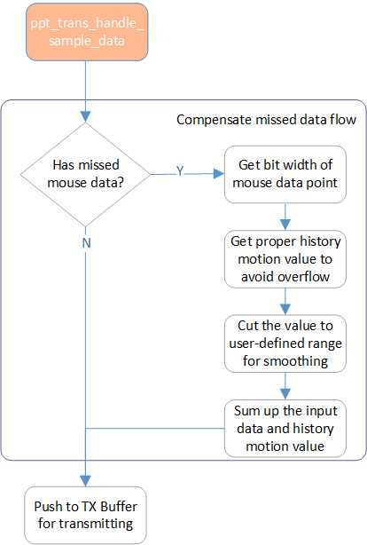
补偿遗失数据流
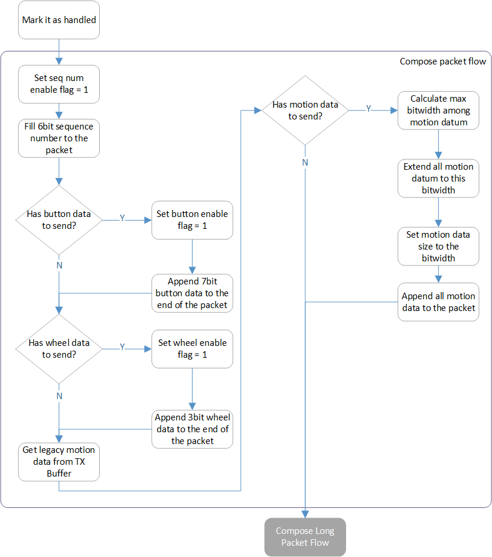
组合封包流程
在配置好给定的mouse数据封包后， 长封包组合流程 负责附加应用程序指定的数据以创建最终的封包。
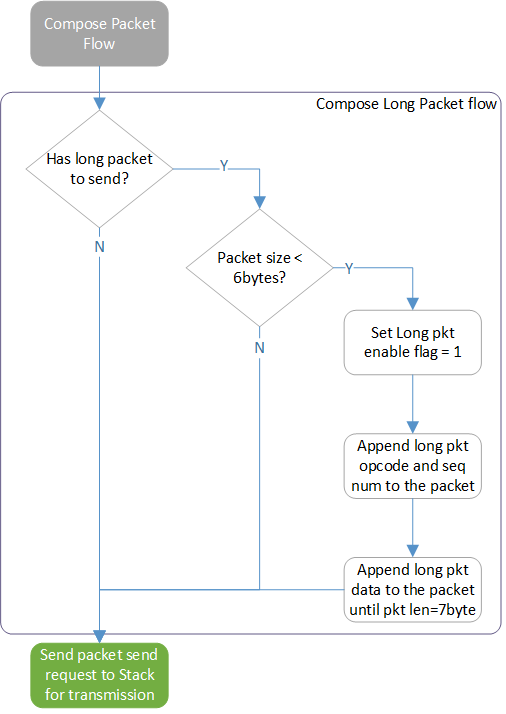
长封包组合流程
Transport Layer封包接收
当封包从Sync layer接收并报告时， 封包接收流程 会执行以解析封包并将结果转发到应用层。
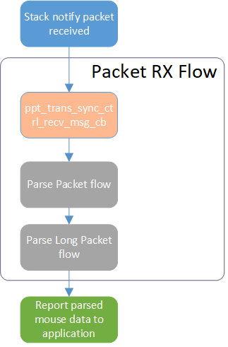
封包接收流程
封包解析流程 子程序负责解析封包并将其转换为应用层参考的mouse数据。

封包解析流程
并且 解析长数据包流程 子程序用于收集每个封包中的长封包片段。 在接收到最后一个片段后，Transport layer将重新组织片段为原始数据并发送到应用层。
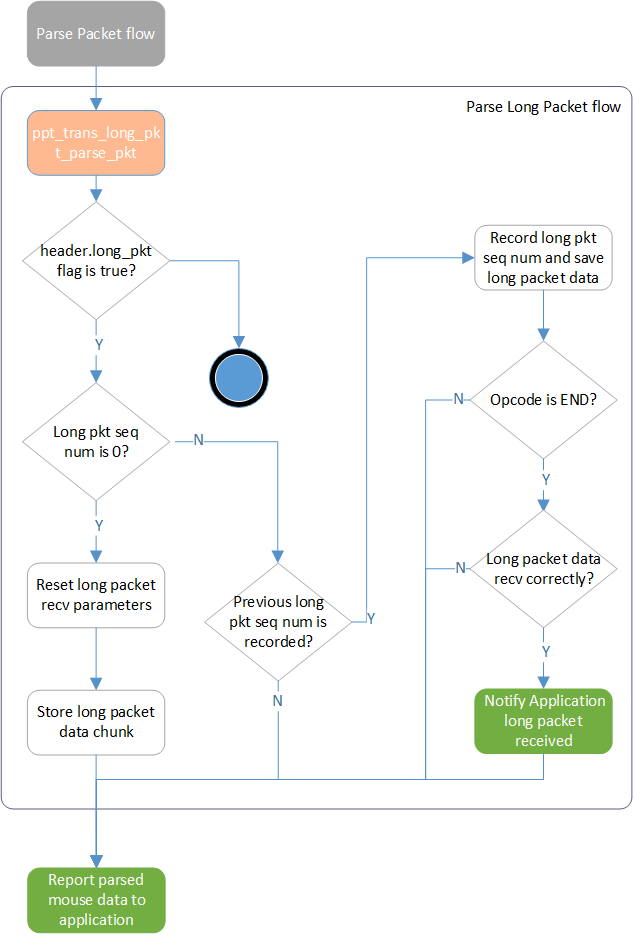
解析长数据包流程
Transport Layer封包 NACK
当从Sync layer接收到NACK事件时，两个对应的流程被应用于mouse光标补偿和长封包重发。Transport layer执行以下流程进行光标数据重发和mouse数据校正。
备注
仅将封包中的最新mouse数据保存到NACK缓冲区，伴随的旧mouse数据不处理，因为它们只是备份。

数据包被拒流
至于自定义的长封包数据，则应用下图流程来重新传输NACK的长封包片段。

长数据包重传流程
Transport Layer封包发送失败
当从Sync layer收到Packet Send Fail事件时，Transport layer执行以下流程以避免延迟增加和游标偏移校正。

数据包发送失败流程
传输层封包 ACK
当从Sync layer收到Packet ACKed事件时，Transport layer执行以下流程以清除NACK缓冲区和长封包参数，用于重传机制。
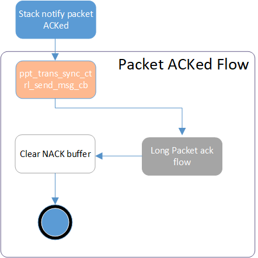
数据包确认流程

长封包段确认流程